Molly and Shaina Comics
Molly and Shaina Comics
Realistic little disasters starring Molly, Shaina, and a suspicious amount of confidence.
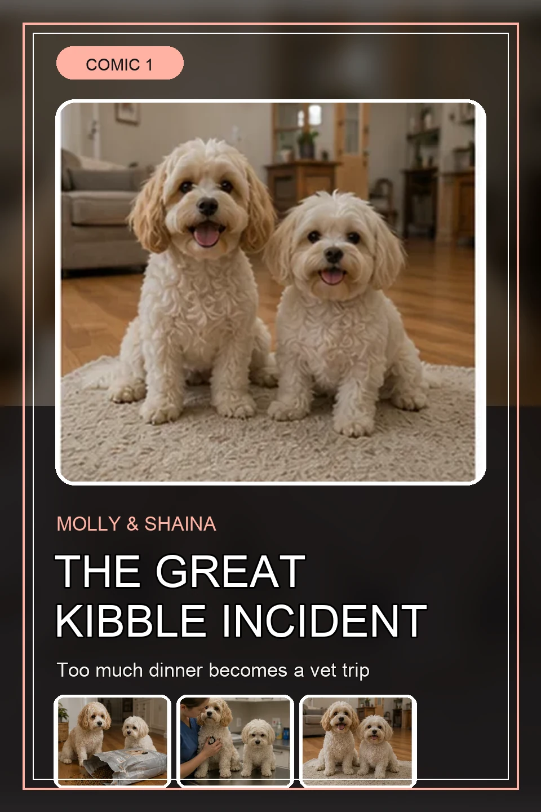
Read Kibble Incident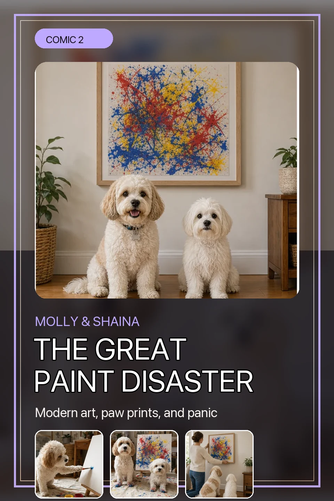
Read Paint Disaster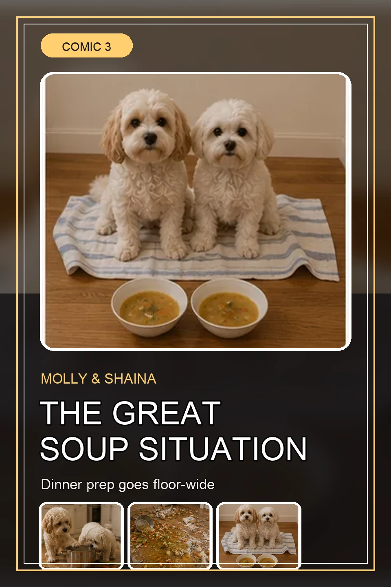
Read Soup SituationComic 1
The Great Kibble Incident
Molly and Shaina find one very open bag of kibble, overcommit to the opportunity, and earn themselves a dramatic recovery arc.
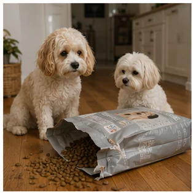
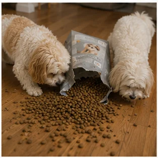
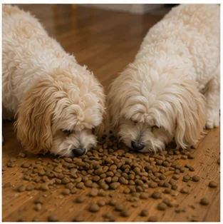
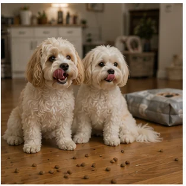
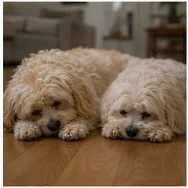
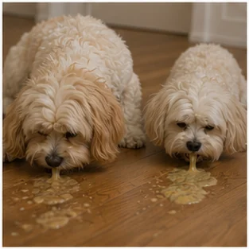
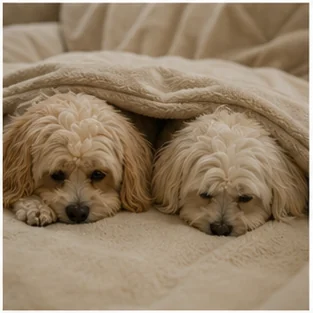
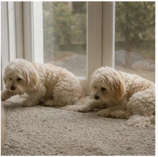
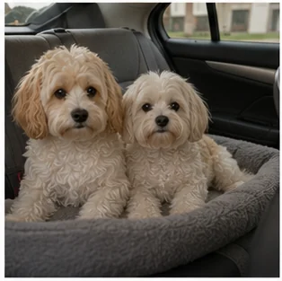
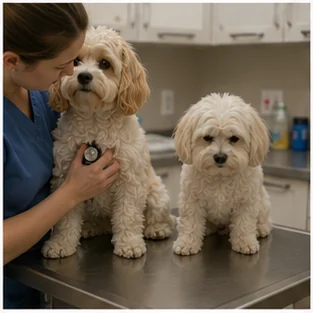
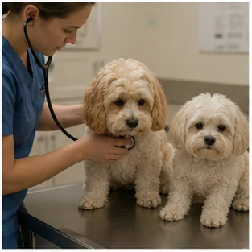
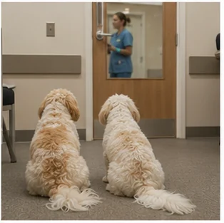
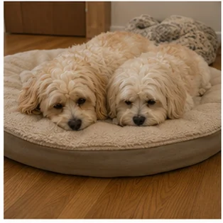
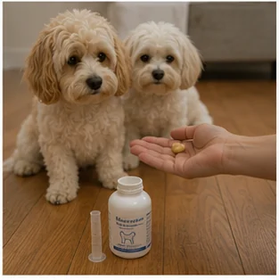
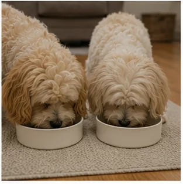
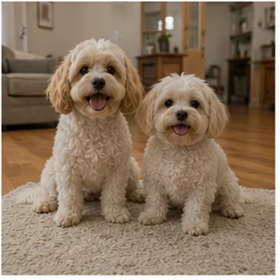
Comic 2
The Great Paint Disaster
Molly and Shaina find a canvas, invent a new art movement, panic briefly, and accidentally become professional painters.
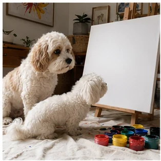
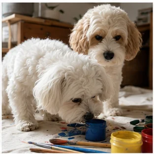
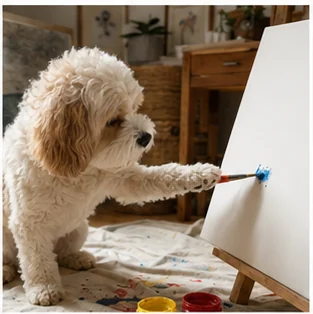
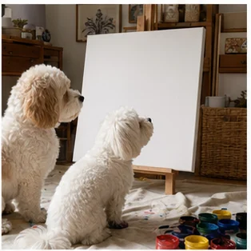
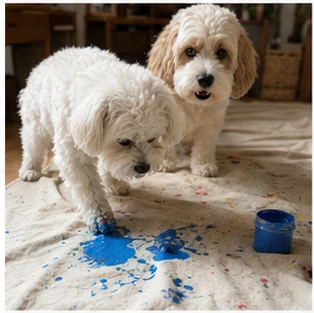
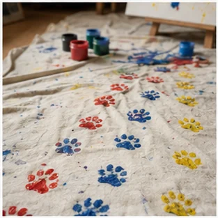
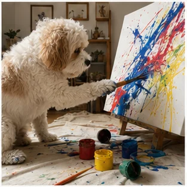
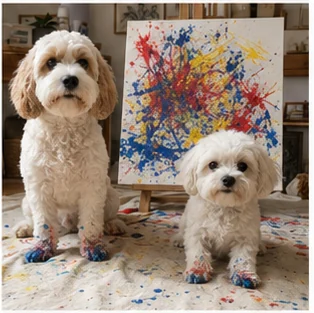
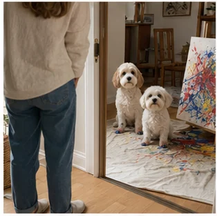
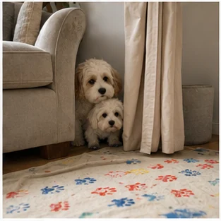
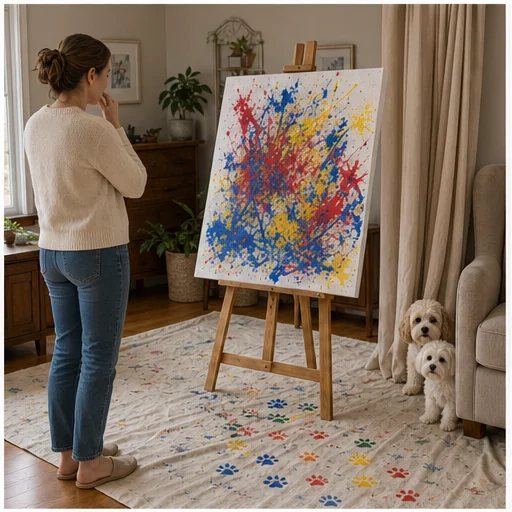
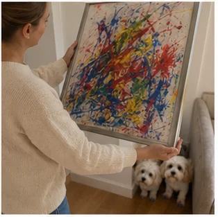
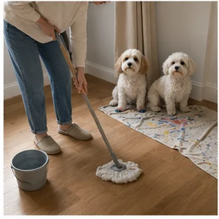
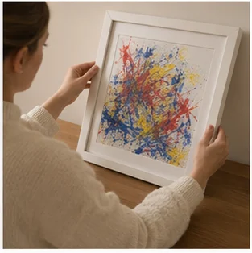
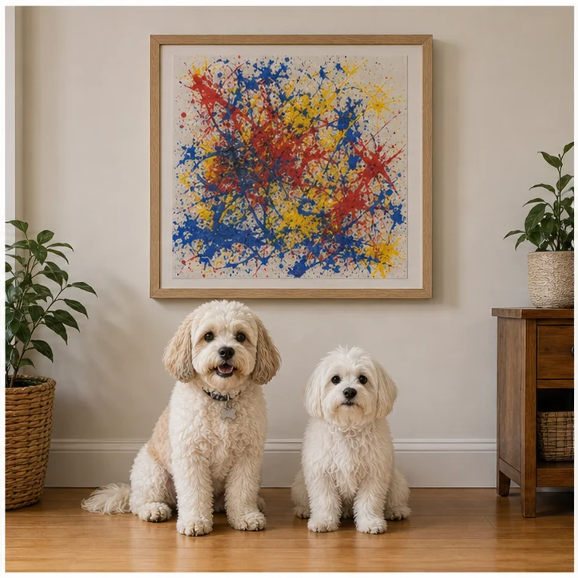
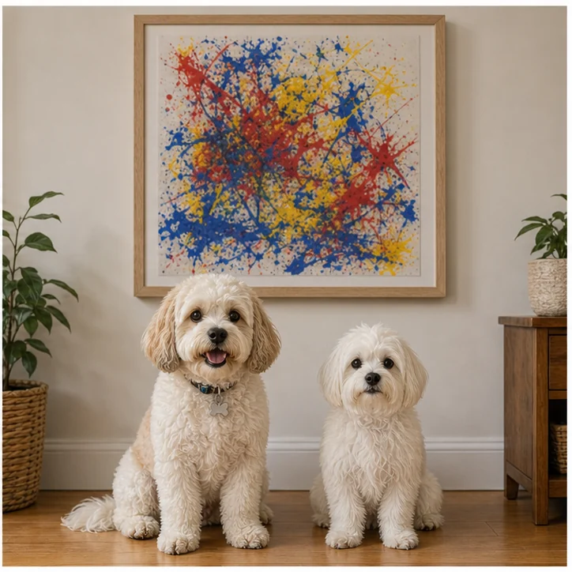
Comic 3
The Great Soup Situation
Molly and Shaina attempt dinner prep, briefly become kitchen staff, and create the kind of soup that requires a mop.
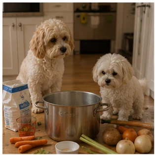
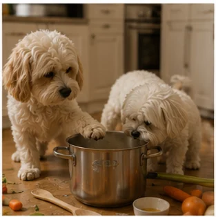
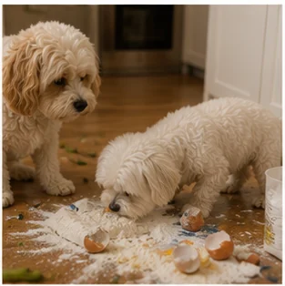
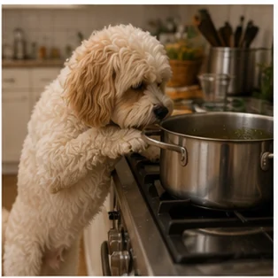
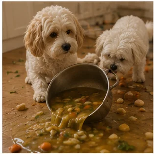
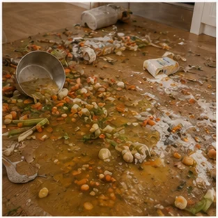
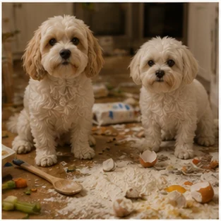
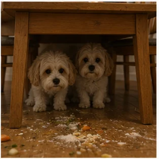
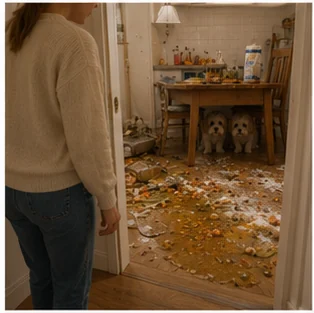
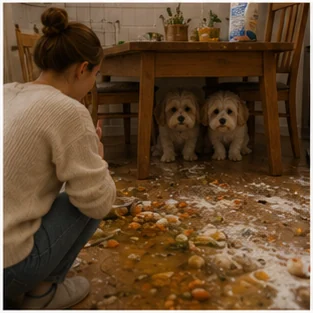
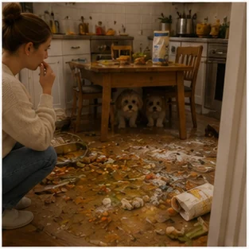
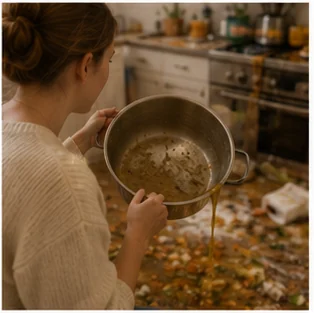
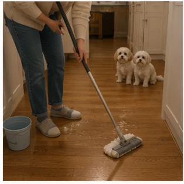
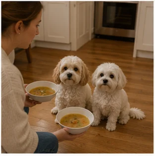
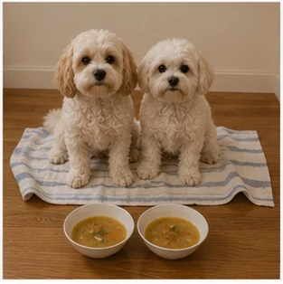